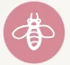

Permaculture Map Berlin
The Problem is the Solution
Peace of Land: Embracing Permaculture
To us, permaculture is more than just a method—Permaculture is a guiding philosophy that touches every aspect of our lives. It guides us in crafting, establishing, and maintaining efficient land and agricultural systems that cater to human needs and resonate harmoniously with local living beings. The small ecosystems we nurture are designed for stability, resilience, and self-sufficiency. Our mission is to foster holistic systems that cherish and sustain all forms of life.
The three core ethical principles of permaculture are:
- Care for the Earth
- Care for People
- Fair Share
Relocated to Kulturmarkthalle
Unfortunately, we had to say goodbye to our old location at Am Weingarten. Starting in winter 2022, we embraced our new sanctuary at the Kulturmarkthalle. There, we've diligently preserved numerous plants, essential tools, and even the rich soil with its teeming life. Our primary attention now lies in cultivating a 16-m2 food forest in the Kulturmarkthalle's front garden. Gratefully, our remaining trees have found new homes across various projects and locations.
Contact and Support Us!
- General Questions:
info@peaceof.land - Events:
veranstaltung@peaceof.land - Support:
veranstaltung@peaceof.land
Our Bank Account:
- Konto-Inhaber: Peace of Land e.V.
- Institut: Berliner Sparkasse
- IBAN: DE63 1005 0000 0190 9933 75
- BIC: BELADEBEXXX
- Verwendungszweck: Spende